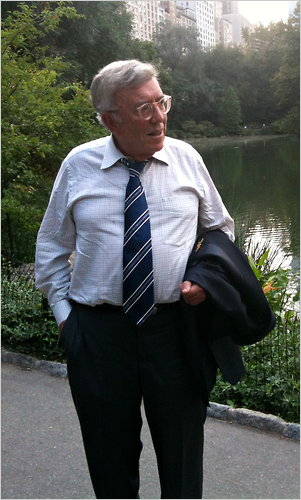

← Home
Milton Gwirtzman
A son's tribute

Milton S. Gwirtzman in Central Park
Some of his finest attributes
- Was a Great Dad
- Loved to hit pop flies to his boy every day at dusk
- Gave talks to the animals periodically
- Was into raw food before it was a movement
- May have reincarnated as his second grandson
- Listened carefully
- Spoke little and said much
- Ate in silence
- Liked to sit in the sun
- Enjoyed his cigars